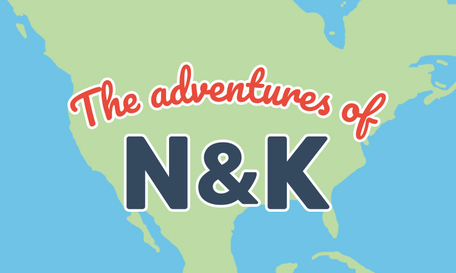

<mat-card>
    <div class="card-content-left">
        
        <mat-chip-list>
            <mat-chip>Angular</mat-chip>
            <mat-chip>TypeScript</mat-chip>
            <mat-chip>Google Maps API</mat-chip>
            <mat-chip>Firebase Realtime Database</mat-chip>
        </mat-chip-list>
    </div>
    <div class="card-content-right">
        <mat-card-title>The Adventure Map</mat-card-title>
        <mat-card-content>
            <p>
                A digital representation of the map my wife keeps in the house of the places we've visited together.
            </p>
        </mat-card-content>
        <mat-card-actions>
            <button mat-button>
                <a href="https://twoflynns.com/" target="_blank">
                    <div class="icon">
                        <i-monitor></i-monitor>
                    </div>
                    <div>Visit site</div>
                </a>
            </button>
            <button mat-button>
                <a href="https://github.com/nickrflynn/two-flynns" target="_blank">
                    <div class="icon">
                        <i-github></i-github>
                    </div>
                    <div>View source</div>
                </a>
            </button>
        </mat-card-actions>
    </div>
</mat-card>